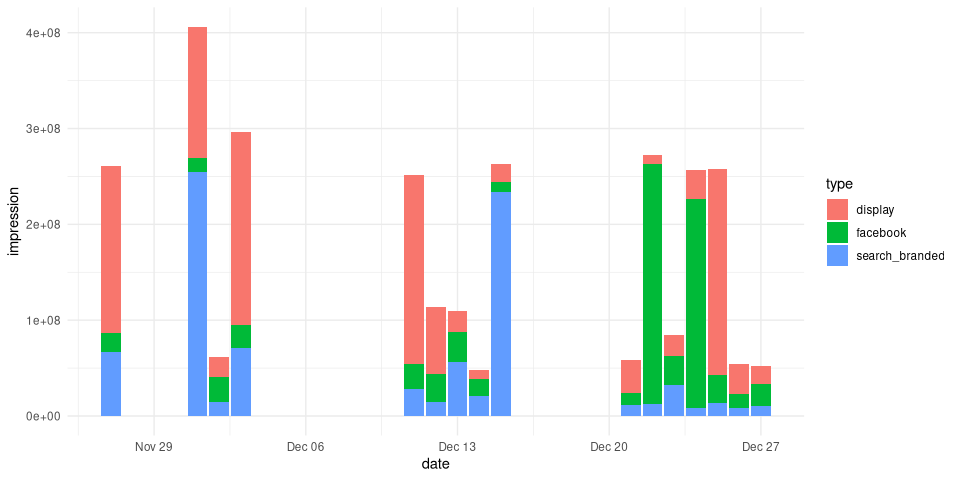

The goal of dammmdatagen is to make it easy for marketing mix modeling professionals to get access to realistic data sets where the ground truth is known. This fascilitates our development and provides in the end more value for all stakeholders of MMM.
Installation
You can install dammmdatagen from github with:
# install.packages("devtools")
devtools::install_github("DoktorMike/dammmdatagen")Quick start
This is a basic example which shows you how to generate a small 1 year data set.
# load useful libraries
library(dammmdatagen)
# generate a basic data set
mydf <- generateCovariatesData()
#> Joining, by = "date"
#> Joining, by = "date"
#> Joining, by = "date"
head(mydf)
#> # A tibble: 6 × 37
#> date sunshine precipitation temperature competitor_a competitor_b
#> <date> <dbl> <dbl> <dbl> <dbl> <dbl>
#> 1 2020-12-18 -0.729 -1.66 0.118 60000 20000
#> 2 2020-12-19 -0.197 -1.87 0.322 100000 40000
#> 3 2020-12-20 1.04 -1.37 -1.27 40000 0
#> 4 2020-12-21 0.157 0.457 0.231 50000 10000
#> 5 2020-12-22 0.00165 1.70 1.55 40000 90000
#> 6 2020-12-23 -0.311 0.995 0.719 10000 60000
#> # … with 31 more variables: competitor_c <dbl>, cpi <dbl>, cci <dbl>,
#> # gdp <dbl>, dist_product_a <dbl>, dist_product_b <dbl>,
#> # dist_product_c <dbl>, price_product_a <dbl>, price_product_b <dbl>,
#> # price_product_c <dbl>, net_display <dbl>, net_facebook <dbl>,
#> # net_search_branded <dbl>, net_tv <dbl>, net_radio <dbl>, net_ooh <dbl>,
#> # net_print <dbl>, imp_display <dbl>, imp_facebook <dbl>,
#> # imp_search_branded <dbl>, imp_tv <dbl>, imp_radio <dbl>, imp_ooh <dbl>, …We can do a lot more of course! In this small snippet we’ll generate 1 month worth of competitor media spendings data and plot that out.
library(dammmdatagen)
library(ggplot2)
library(dplyr)
library(tidyr)
library(scales)
generateCompetitorData(fromDate = Sys.Date()-30, toDate = Sys.Date()) %>%
gather("competitor", "spend", -"date") %>%
ggplot(aes(y=spend, x=date, fill=competitor)) +
geom_bar(stat="identity", position = position_stack()) +
theme_minimal() + scale_y_continuous(labels = dollar_format(prefix = "kr. "))
Just as we can generate competitor spending data we can also generate macroeconomical data. These types of indicators are typically slow moving over time with minor temporal differences.
generateMacroData(fromDate = Sys.Date()-30, toDate = Sys.Date()) %>%
gather("indicator", "value", -"date") %>%
ggplot(aes(y=value, x=date, color=indicator)) +
geom_line(size = 1.5) + theme_minimal()
Event type data
Event data are modeled as a poisson distribution with a low incidence.
generateEventData(Sys.Date()-265, Sys.Date()) %>%
gather(type, value, -date) %>%
ggplot(aes(y=value, x=date, fill=type)) +
geom_bar(stat="identity") + theme_minimal()
The incidence can of course be controlled. This is done via the freq parameter.
generateEventData(Sys.Date()-265, Sys.Date(), freq = 0.1) %>%
gather(type, value, -date) %>%
ggplot(aes(y=value, x=date, fill=type)) +
geom_bar(stat="identity") + theme_minimal()
Media generation
Generating media is in general a bit more complicated as we need more information since in MMM models that’s what we primarily care about. So we need three data.frames; the net, the impressions and the cpms. We also differentiate between offline and online media. This difference is rather artificial right now but it’s to futureproof the package.
mydflist <- generateOnlineData(Sys.Date()-30, Sys.Date())
mydflist[["impression"]] %>%
gather(type, impression, -date) %>%
ggplot(aes(y=impression, x=date, fill=type)) +
geom_bar(stat="identity") + theme_minimal()
Code of Conduct
Please note that the dammmdatagen project is released with a Contributor Code of Conduct. By contributing to this project, you agree to abide by its terms.